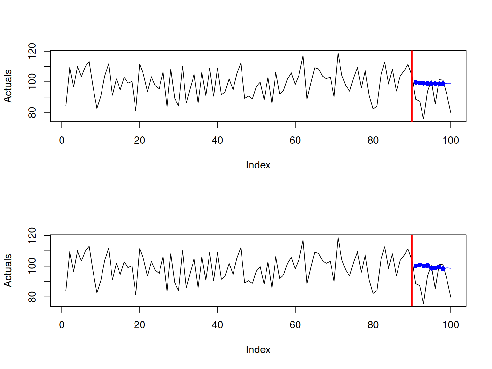
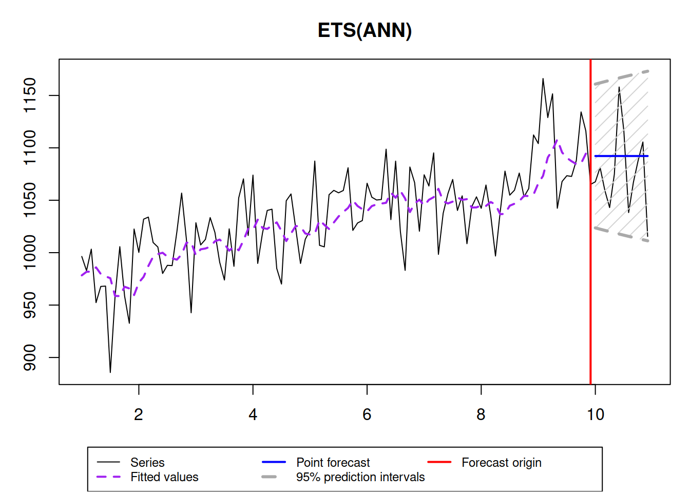
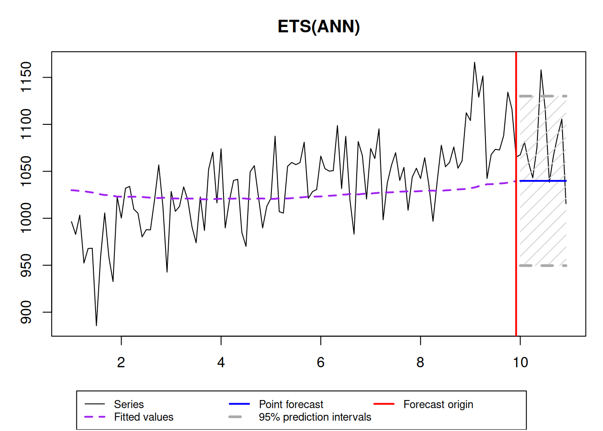

5.2 SES and ETS(A,N,N)
There have been several tries to develop statistical models, underlying SES, and we know now that it has underlying ARIMA(0,1,1), local level MSOE (Multiple Source of Error) model (Muth 1960) and SSOE (Single Source of Error) model (Snyder 1985). According to (Hyndman et al. 2002), the ETS(A,N,N) model also underlies the SES method. It can be formulated in the following way: \[\begin{equation} \begin{split} y_{t} &= l_{t-1} + \epsilon_t \\ l_t &= l_{t-1} + \alpha \epsilon_t \end{split} , \tag{5.3} \end{equation}\] where, as we know from the previous section, \(l_t\) is the level of the data, \(\epsilon_t\) is the error term and \(\alpha\) is the smoothing parameter. Note that we use \(\alpha\) without the “hat” symbol, which implies that there is a “true” value of the parameter (which could be obtained if we had all the data in the world or just knew it for some reason). It is easy to show that ETS(A,N,N) underlies SES. In order to see this, we need to take move towards estimation phase and use \(\hat{l}_{t-1}=l_{t-1}\) and move to estimates \(\hat{\alpha}\) and \(e_t\) (the estimate of the error term \(\epsilon_t\)): \[\begin{equation} \begin{split} y_{t} &= \hat{l}_{t-1} + e_t \\ \hat{l}_t &= \hat{l}_{t-1} + \hat{\alpha} e_t \end{split} , \tag{5.4} \end{equation}\] and also take that \(\hat{y}_t=l_{t-1}\): \[\begin{equation} \begin{split} y_{t} &= \hat{y}_{t} + e_t \\ \hat{y}_{t} &= \hat{y}_{t-1} + \hat{\alpha} e_{t-1} \end{split} . \tag{5.5} \end{equation}\] Inserting the second equation in the first one and substituting \(y_t\) with \(\hat{y}_t+e_t\) we get: \[\begin{equation} \hat{y}_t+e_t = \hat{y}_{t-1} + \hat{\alpha} e_{t-1} + e_t , \tag{5.6} \end{equation}\] cancelling out \(e_t\) and shifting everything by one step ahead, we obtain the error correction form (5.2) of SES.
But now, the main benefit of having the model (5.3) instead of just the method (5.2) is in having a flexible framework, which allows adding other components, selecting the most appropriate ones, estimating parameters in a consistent way, producing prediction intervals etc.
In order to see the data that corresponds to the ETS(A,N,N) we can use sim.es() function from smooth package. Here are several examples with different smoothing parameters:
x <- vector("list",6)
initial <- 1000
meanValue <- 0
sdValue <- 20
alphas <- c(0.1,0.3,0.5,0.75,1,1.5)
for(i in 1:length(alphas)){
x[[i]] <- sim.es("ANN", 120, 1, 12, persistence=alphas[i], initial=initial, mean=meanValue, sd=sdValue)
}
par(mfcol=c(3,2))
for(i in 1:6){
plot(x[[i]], main=paste0("alpha=",x[[i]]$persistence), ylim=initial+c(-500,500))
}
This simple simulation shows that the higher \(\alpha\) is, the higher variability is in the data and less predictable the data becomes. This is related with the higher values of \(\alpha\), the level changes faster, also leading to the increased uncertainty about the future values of the level in the data.
When it comes to the application of this model to the data, the point forecast corresponds to the conditional h steps ahead mean and is equal to the last observed level: \[\begin{equation} \mu_{y,t+h|t} = l_{t} , \tag{5.7} \end{equation}\] this holds because it is assumed that \(\text{E}(\epsilon_t)=0\), which implies that the conditional h steps ahead expectation of the level in the model is \(\text{E}(l_{t+h}|t)=l_t+\alpha\sum_{j=1}^{h-1}\epsilon_{t+j} = l_t\).
Here is an example with automatic parameter estimation in ETS(A,N,N) using es() function from smooth package:
x <- sim.es("ANN", 120, 1, 12, persistence=0.3, initial=1000)
ourModel <- es(x$data, "ANN", h=12, interval=TRUE, holdout=TRUE, silent=FALSE)
## Time elapsed: 0.03 seconds
## Model estimated: ETS(ANN)
## Persistence vector g:
## alpha
## 0.2767
## Initial values were optimised.
##
## Loss function type: MSE; Loss function value: 893.7017
## Error standard deviation: 30.3189
## Sample size: 108
## Number of estimated parameters: 3
## Number of degrees of freedom: 105
## Information criteria:
## AIC AICc BIC BICc
## 1046.391 1046.622 1054.437 1054.977
##
## 95% parametric prediction interval was constructed
## 92% of values are in the prediction interval
## Forecast errors:
## MPE: 1.7%; sCE: 21.6%; Bias: 52.1%; MAPE: 3.1%
## MASE: 1.147; sMAE: 3.2%; sMSE: 0.2%; rMAE: 0.921; rRMSE: 0.98As we see, the true smoothing parameter is 0.3, but the estimated one is not exactly 0.3, which is expected, because we deal with an in-sample estimation. Also, notice that with such a high smoothing parameter, the prediction interval is widening with the increase of the forecast horizon. If the smoothing parameter would be lower, then the bounds would not increase, but this might not reflect the uncertainty about the level correctly. Here is an example with \(\alpha=0.01\):
 In this case, the prediction interval is wider than needed and the forecast is biased - the model does not keep up to the fast changing time series. So, it is important to correctly estimate the smoothing parameters not only to approximate the data, but also to produce less biased point forecast and more appropriate prediction interval.
References
Hyndman, Rob J, Anne B Koehler, Ralph D Snyder, and Simone Grose. 2002. “A state space framework for automatic forecasting using exponential smoothing methods.” International Journal of Forecasting 18 (3): 439–54. https://doi.org/10.1016/S0169-2070(01)00110-8.
Muth, John F. 1960. “Optimal Properties of Exponentially Weighted Forecasts.” Journal of the American Statistical Association 55 (1): 299–306. https://doi.org/10.2307/2281742.
Snyder, Ralph D. 1985. “Recursive Estimation of Dynamic Linear Models.” Journal of the Royal Statistical Society, Series B (Methodological) 47 (2): 272–76. https://doi.org/10.1111/j.2517-6161.1985.tb01355.x.